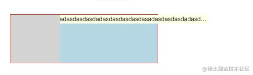

盒模型
盒子的组成部分
无论是行盒、还是块盒，都由下面几个部分组成，从内到外分别是：
- 内容 content
width、height，设置的是盒子内容的宽高
内容部分通常叫做整个盒子的内容盒 content-box
- 填充(内边距) padding
盒子边框到盒子内容的距离
padding-left、padding-right、padding-top、padding-bottom
padding: 简写属性
padding: 上 右 下 左
填充区+内容区 = 填充盒 padding-box
- 边框 border
边框 = 边框样式 + 边框宽度 + 边框颜色
边框样式：border-style
边框宽度：border-width
边框颜色：border-color
边框+填充区+内容区 = 边框盒 border-box
- 外边距 margin
边框到其他盒子的距离
margin-top、margin-left、margin-right、margin-bottom
速写属性 margin
行盒
常见的行盒：包含具体内容的元素
span、strong、em、i、img、video、audio
行内元素不会独占页面的一行，只占自身的大小,行内元素的默认宽度和高度都是被内容撑开
特点
- 盒子沿着内容沿伸
- 行盒不能设置宽高
调整行盒的宽高，应该使用字体大小、行高、字体类型，间接调整。 - 内边距（填充区）
水平方向有效，垂直方向不会实际占据空间。 - 边框
水平方向有效，垂直方向不会实际占据空间。 - 外边距
水平方向有效，垂直方向不会实际占据空间。
行块盒
display：inline-block 的盒子
- 不独占一行
- 盒模型中所有尺寸都有效 3.有许多问题，打包完的样式与开发样式可能不一样，不建议使用
空白折叠
空白折叠，发生在行盒（行块盒）内部 或 行盒（行块盒）之间
可以将标签和内容写在同一行，以防止发生空白折叠
这个不太有解决方法，所以尽量减少行块盒的使用，常用于分页
可替换元素 和 非可替换元素
大部分元素，页面上显示的结果，取决于元素内容，称为非可替换元素
少部分元素，页面上显示的结果，取决于元素属性，称为可替换元素
可替换元素：img、video、audio，iframe
绝大部分可替换元素均为行盒。
可替换元素类似于行块盒，盒模型中所有尺寸都有效。
块盒
display 等于 block 的元素
浏览器默认样式表设置的块盒：div、h1~h6、p
常规流
所有元素，默认情况下，都属于常规流布局
总体规则：块盒独占一行，行盒水平依次排列
包含块（containing block）：每个盒子都有它的包含块，包含块决定了盒子的排列区域。(父元素)
绝大部分情况下：盒子的包含块，为其父元素的内容盒
块盒
- 每个块盒的总宽度，必须刚好等于包含块的宽度
宽度的默认值是 auto(宽度撑满屏幕)
margin 的取值也可以是 auto（margin 的撑满屏幕），默认值 0
auto：将剩余空间吸收掉（宽度和 margin 宽度都会去吸收剩余空间，但 width 吸收能力强于 margin）
若宽度、边框、内边距、外边距计算后，仍然有剩余空间，该剩余空间被 margin-right 全部吸收，总之，
每个块盒的总宽度，必须刚好等于包含块的宽度
块盒居中方式
在常规流中，块盒在其包含快中居中，可以定宽、然后左右 margin 设置为 auto。
- 每个块盒垂直方向上的 auto 值
height:auto， 适应内容的高度
margin:auto， 表示 0
- 百分比取值
padding、宽度、margin 可以取值为百分比
以上的所有百分比相对于包含块的宽度。
高度的百分比：
1）包含块的高度是否取决于子元素的高度，设置百分比无效
2）包含块的高度不取决于子元素的高度，百分比相对于父元素高度
- 上下外边距的合并
两个常规流块盒，上下外边距相邻，会进行合并。
两个外边距取最大值。
浮动
应用场景
- 文字环绕
- 横向排列
浮动的基本特点
修改 float 属性值为：
- left：左浮动，元素靠上靠左
- right：右浮动，元素靠上靠右
默认值为 none
- 当一个元素浮动后，元素必定为块盒(更改 display 属性为 block)
- 浮动元素的包含块，和常规流一样，为父元素的内容盒
盒子尺寸
- 宽度为 auto 时，适应内容宽度
- 高度为 auto 时，与常规流一致，适应内容的高度
- margin 为 auto，为 0.
- 边框、内边距、百分比设置与常规流一样
盒子排列
- 左浮动的盒子靠上靠左排列
- 右浮动的盒子考上靠右排列
- 浮动盒子在包含块中排列时，会避开常规流块盒
- 常规流块盒在排列时，无视浮动盒子
- 行盒在排列时，会避开浮动盒子（所以可以用浮动来制作文字环绕效果）
- 外边距合并不会发生
如果文字没有在行盒中，浏览器会自动生成一个行盒包裹文字，该行盒叫做匿名行盒。
常规盒在浮动盒中间的时候，前面的浮动盒不会受到影响，这个常规盒子后面的盒子将会避开常规流盒子
常规流盒子在最后，就完全垫在了浮动盒子下面
常规盒子在最前
浮动盒子的顶边不得高于上一个盒子的顶边
若剩余空间无法放下浮动的盒子，则该盒子向下移动，直到具备足够的空间能容纳盒子，然后再向左或向右移动
高度坍塌
高度坍塌的根源：常规流盒子的自动高度，在计算时，不会考虑浮动盒子
清除浮动，涉及 css 属性：clear
- 默认值：none
- left：清除左浮动，该元素必须出现在前面所有左浮动盒子的下方
- right：清除右浮动，该元素必须出现在前面所有右浮动盒子的下方
- both：清除左右浮动，该元素必须出现在前面所有浮动盒子的下方
可以给父元素上写上.clearfix 这个类名，因为这个伪元素放在了所有浮动盒子的最后
.clearfix::after{ content: ""; display: block; clear: both; }
定位
使用 position 属性来设置定位
可选值：
- static 默认值，元素是静止的没有开启定位
- relative 开启元素的相对定位
- absolute 开启元素的绝对定位
- fixed 开启元素的固定定位
- sticky 开启元素的粘滞定位
相对定位（relative）
- 相对定位是参照于元素在文档流中的位置进行定位的
- 相对定位会提升元素的层级
- 相对定位不会使元素脱离文档流
- 相对定位不会改变元素的性质块还是块，行内还是行内
偏移量
top 定位元素和定位位置上边的距离
bottom 定位元素和定位位置下边的距离
left 定位元素和定位位置的左侧距离
right 定位元素和定位位置的右侧距离
在水平方向不能同时设置 left 和 right 属性，如果同时设置，只会加载 left 属性，垂直方向如果 top 和 bottom 同时设置，只会加载 top 属性。
绝对定位（absolute）
- 宽高为 auto，适应内容
- 含块变化：找祖先中第一个定位元素，该元素的填充盒为其包含块。若找不到，则它的包含块为整个网页（初始化包含块）
- 开启绝对定位后，元素会从文档流中脱离
- 绝对定位会使元素提升一个层级
偏移量等同于相对定位的属性
容器设置绝对定位且 left、top、right、bottom 为 0，不设置宽高，默认是铺满整个父容器的
一个绝对定位的元素，同时指明了 left 和 right。如果没有其他属性影响(没有指明 width)，那么这个元素会拉伸去满足 left 和 right。比如设置了 left:0;right:0;的效果就和单独设置 data-width:100%;一样。不过如果同时又设置了宽度，那么 right 属性将会被忽略。top 和 bottom 同理。但如果设置了宽高，可以让他根据父容器垂直居中
1.让明确宽高的盒子垂直水平居中
2. 让无宽高的盒子填满父容器
固定定位（fixed）
固定为视口（浏览器的可视窗口）
补充
- 绝对定位、固定定位元素一定是块盒（不是也会自动变为是）
- 绝对定位、固定定位元素一定不是浮动
- 没有外边距合并
BFC
渲染区域
这个区域由某个 HTML 元素创建，以下元素会在其内部创建 BFC 区域
- 根元素
- 浮动
- 绝对定位元素
- overflow 不等于 visible 的块盒

不同的 BFC 区域，它们进行渲染时互不干扰
创建 BFC 的元素，隔绝了它内部和外部的联系，内部的渲染不会影响到外部具体规则：
- 创建 BFC 的元素，它的自动高度需要计算浮动元素创建 BFC 的元素（如果单纯想要避免高度塌陷，还是使用原来的方式较好，不会产生副作用）
- 它的边框盒不会与浮动元素重叠创建 BFC 的元素
设置 BFC 以后一定会避开浮动元素
.float{
width: 200px;
height: 200px;
margin: 20px;
background: red;
float: left;
}
.container{
height: 500px;
background: #008c8c;
/* bfc */
overflow: hidden;
}
<div class="float"></div>
<div class="container"></div>
他并没有无视浮动元素
- 不会和它的子元素进行外边距合并
这些规则和绝对定位元素没有关系，不会受到影响
flex 布局
将父元素设置为 display:flex 时，子元素不设高度时（宽度需要设置）会默认撑开满父元素高度
伸缩盒子
设置父容器为伸缩盒子：会使每一个子元素自动变成伸缩项
display: flex;
子元素排列方式
设置子元素的排列方式
flex-start:让子元素从父容器的起始位置开始排列
flex-end:让子元素从父容器的结束位置开始排列
center:让子元素从父容器的中间位置开始排列
space-between:左右对齐父容器的开始和结束，中间平均分页，产生相同的间距
space-around:将多余的空间平均的分页在每一个子元素的两边
justify-content: space-around; - 如何分配主轴上的空白空间（主轴上的元素如何排列）
控制换行
flex-wrap:控制子元素是否换行显示，默认不换行
nowrap:不换行–则收缩（默认）
wrap:换行
wrap-reverse:翻转，原来是从上到下，翻转后就是从下到上来排列
flex-wrap: wrap;
子元素的排列方向
flex-direction：设置子元素的排列方向：就是用来主轴方向，默认主轴方向是 row(水平方向)
row:水平排列方向，从左到右
row-reverse:水平排列方向，从右到左
column:垂直排列方向，从上到下
column-reverse：垂直排列方向，从下到上
flex-direction: column-reverse;
flex-flow:是 flex-wrap 和 flex-direction 的综合
flex-flow: row wrap;
侧轴方向上的对齐方式（垂直居中）
align-items:设置子元素(伸缩项)在侧轴方向上的对齐方式
center:设置在侧轴方向上居中对齐
flex-start:设置在侧轴方向上顶对齐
flex-end:设置在侧轴方向上底对齐
stretch:拉伸：让子元素在侧轴方向上进行拉伸，填充满整个侧轴方向>> 默认值
baseline:文本基线
align-items: center;
align-content 与 align-items
align-content 属性值就是 align-items 的值
如果设置了高度，两者会有区别
align-content:center 对单行是没有效果的,而 align-items:center 不管是对单行还是多行都有效果,而在我们日常开发中用的比较多的就是 align-items.
**以上都是给 display:flex 盒子设置的，以下是子元素的属性 **
**一个元素可以既是弹性盒子，又是子元素 **
子元素属性
flow-grow:可以来扩展子元素的宽度：设置当前元素应该占据剩余空间的比例值
比例值计算 ：当前空间的 flex-grow/所有兄弟元素的 flex-grow 的和
flex-grow 的默认是 0:说明子元素并不会去占据剩余的空间
flex-grow: 1;
flex-shrink:定义收缩比例，通过设置的值来计算收缩空间
比例值计算 ：当前空间的 flex-shrink/所有兄弟元素的 flex-shrink 的和默认值为 1
flex-shrink: 3;
flex 是用来设置当前伸缩子项占据剩余空间的比例值
flex: 1;
flex 可以设置弹性元素所有的三个样式
flex 增长 缩减 基础;
initial "flex: 0 1 auto".
auto "flex: 1 1 auto"
none "flex: 0 0 auto" 弹性元素没有弹性
可以设置flex:0 0 200px给予固定宽度（这样没有弹性，可以溢出）
align-self: flex-start; 子元素内可以再次单独调整位置
align-self: 用来覆盖当前弹性元素上的 align-items ，属性值就是 align-items 的值
center:设置在侧轴方向上居中对齐
flex-start:设置在侧轴方向上顶对齐
flex-end:设置在侧轴方向上底对齐
stretch:拉伸：让子元素在侧轴方向上进行拉伸，填充满整个侧轴方向>> 默认值
baseline:文本基线
响应式布局
媒体查询
使用@media 媒体查询可以针对不同的媒体类型定义不同的样式，特别是响应式页面，可以针对不同屏幕的大小，编写多套样式，从而达到自适应的效果
@media screen and (max-width: 960px){
body{
background-color:#FF6699
}
}
@media screen and (max-width: 768px){
body{
background-color:#00FF66;
}
}
长度单位控制
像素(px)
屏幕（显示器）实际上是由一个一个的小点点构成的,不同屏幕的像素大小是不同的，像素越小的屏幕显示的效果越清晰,所以同样的 200px 在不同的设备下显示效果不一样
百分比
设置百分比可以使子元素跟随父元素的改变而改变
em
em 会根据父元素字体大小来计算
rem
rem 是相对于根元素的字体大小来计算
vw/vh
css3 中引入了一个新的单位 vw/vh，与视图窗口有关，vw 表示相对于视图窗口的宽度，vh 表示相对于视图窗口高度。 任意层级元素，在使用 vw 单位的情况下，1vw 都等于视图宽度的百分之一。
min-width 和 max-width
可以设置最大最小宽度
flex 布局
常见问题
fixed 和 absolute 的区别
fixed 是绝对定位的一种特殊情况，它们的参考系不一样
- absolute 参考有定位的父元素
- fixed 参考视口(viewport)
什么时候使用绝对定位
下面三个条件满足任何一个时，使用绝对定位：
- 元素出现在一个天马行空的位置
- 元素是否存在，不影响其他元素的排列
- 单个元素在某个区域内水平垂直居中
width: 100%和 width: auto 有什么区别
width：100%
100%表示子元素的宽度和父元素的宽度相等，其中并不包括子元素内外边距以及边框的值，为子元素真正的宽度
width：auto
auto 表示子元素的 宽度+内边距+外边距+边框 才等于父元素的宽度
上述父元素的宽度都是父元素真正的宽度，即父元素 width 属性值

如果设置了 width:100%,那么无论如何他的内容宽度都必须 1px 都不能少，得是 width:100%
文字居中
如果采用这一套使 div 居中的方式可能并不奏效或者效果不是最好，最好还是设置 line-height
display: flex; justify-content: center; align-items: center;
flex 布局子元素宽度超出父元素问题
当 flex 子元素里的子元素的宽度过大，超出 flex 父元素时，设置 flex:1 并不能限制 flex 子元素的尺寸；具体表现如下：
问题分析
right 的宽度该如何计算？
正常情况下的元素宽度，如果设置有具体的值，那就是设置的值；如果没有设置，那就是该元素内容区占据的宽度。上面的例子可以看到，.right 并没有设置 width 属性，所以.right 是由.right-content 撑开
解决方案
- 限制子元素原本宽度，.right 设置 width 属性
修改.right 元素 css 如下，
.wrap {
...
.right {
width: 0; //新增
flex: 1;
background: lightblue;
&-content {
...
}
}
}
原理：强行设置.right 原本宽度为 0，让.right 盒模型宽度完全由 flex: 1 这个属性来分配。
chrome 浏览器效果完美：
但是在 firefox 浏览器时，即使设置 width: 0，也不会生效，子元素还是超出；min-width: 0 可以
- .right 设置 overflow 属性不为 visible 设置 width: 0 可行的前提是:.right-content 元素宽度继承父元素.right。如果当.right-content 元素设置了自己的宽度时，方法 1 就不能满足了，如下所示：

设置.right-content 元素 css 如下，子元素依然会超出
.wrap {
...
.right {
width: 0; //新增
flex: 1;
background: lightblue;
&-content {
width: 300px; //新增
overflow: hidden;
white-space: nowrap;
text-overflow: ellipsis;
background: lightyellow;
}
}
}
这时候就回到了基本的 css 问题，子元素内容超出如何展示，给.right 设置 overflow 搞定
.wrap {
...
.right {
// width: 0;
flex: 1;
background: lightblue;
overflow: auto; //新增
&-content {
width: 300px; //新增
overflow: hidden;
white-space: nowrap;
text-overflow: ellipsis;
background: lightyellow;
}
}
}
总结
- 设置 min-width：0 可以解决当 flex 子元素的子元素大小为 auto 的情况；
- 设置 overflow 不为 visible 可以解决所有情况下的麻烦；